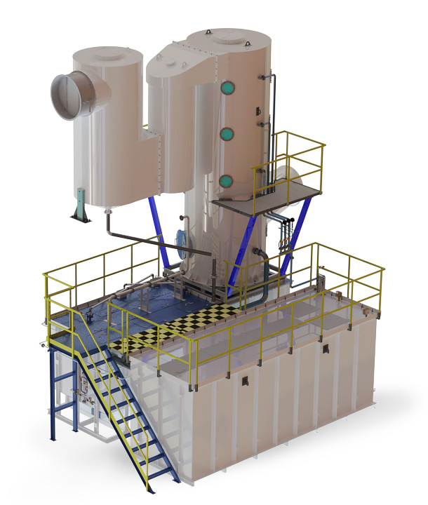

ABU-25
Absorption-Biological Unit (ABU) for purification of industrial ventilation air with a capacity of 5 thousand m3/h (ABU-5)
TECHNICAL CHARACTERISTICS AND BASIC DATA
1. ABU-25 technical characteristics and overall dimensions:
- Efficiency of capturing phenol, formaldehyde:
- At least 95%, with an input concentration of >20 mg/m3;
- At least 85%, with an input concentration of 10-20 mg/m3;
- At least 80%, with an input concentration of 6-10 mg/m3;
- At least 70%, with an input concentration of 4-6 mg/m3;
- Efficiency of removing triethylamine and suspended substances is 96 - 99.9% (triethylamine output concentration does not exceed 20 mg/m3);
- Efficiency of capturing suspended substances - at least 98%;
- Ventilation network resistance is 1700 Pa max;
- Hydraulic resistance (ABU’s pressure loss) is 2400 Pa max;
- Temperature in the room intended for ABU installation is + 5 ... + 30 °C;
- Overall dimensions, L \ W \ H: 3800 \ 2200 \ 5400 mm. (when being installed as a single unit).
2. Consumables and electricity consumption:
- Installed power - 27 kW, including the ventilator - 22 kW;
- Industrial water for compensatory feeding, depending on the temperature and humidity of the air to be cleaned - 2.0 m3/day max (to compensate for loss in humidity of the ventilation air during operation);
- Compressed air (the unit can be equipped with an autonomous blower) - 40.0 Nm3/h max, pressure - 0.2-0.7 MPa;
3. Maintenance of ABU-25
Maintenance of an ABU is limited to removal of suspended and condensing substances from the sludge basket and maintaining the necessary content of phosphorus, nitrogen and potassium in the absorbent by supplying biogenic additives (BA). To determine if BAs need to be added to the absorbent, it is recommended to measure the content of phosphorus, nitrogen and potassium once a month.The efficiency of absorbent regeneration by destructing microorganisms is monitored by an indirect indicator - chemical oxygen consumption (COC), which is recommended to be determined once a month.
4. Basic data for ABU installation
4.1. Structural design and requirements to the premise for ABU installation
- Concrete floor at the mark of 0.000 for placement of ABU equipment. The floor needs to be levelled. The concrete thickness depends on the projected ABU loads. The ABU equipment is installed on two frames.
- Max load on one frame is 18 tons.
- The equipment does not need to be attached to the floor.
- Emergency draining traps for occasional spills of the absorbent in the concrete floor structure. Traps shall be connected to the workshop sewerage.
The volume of occasional spills does not exceed 8 m3 per one accident. An “accident” means a vessel body leakage or valves leakage.
Composition of the substances to be drained:
- Phosphate content - 150 mg/l max;
- Content of nitrates - 200 mg/l max;
- The pH value is 6.5-8.3;
- Chemical oxygen consumption (COC) - 6,000 mgO2/l max;
- Suspended substances - 0.1% max by volume, and particle size - 0.2 mm max;
- Hoisting mechanisms are not required for ABU maintenance.
- Ambient temperature in the ABU installation room: at least 5°C in the coldest month. Maximum temperature in the ABU installation room shall be 30°C.
- In terms of explosion and fire safety, the ABU installation room belongs to the lowest category - D (there are cold incombustible substances and materials, combustible and hard-combustible substances and materials in the room, in such quantities that the specific fire load does not exceed 100 mJ/m2 in their locations, and the fire load in the room is below 1000 mJ).
4.3. Water supply
- Provide for industrial water supply to ABU Ду 20 fitting for a one-time filling of the tanks (about 20 m3) when the ABU is started.
- Compensatory water consumption by the ABU - 2.0 m3/day max.
- Requirements for industrial water to be used as additional feeding:
- Pressure - 0.2-0.6 MPa;
- Mechanical impurities content - 0.1% max by volume, particle size - 0.2 mm max;
- Temperature - 5-30 °С.
The ABU needs to be connected to the local water supply system through the manifold valve Ду 20mm.
- A suitable valve for a water feed point is supplied, except for the manifold valve.
- With the ABU absorption system running (pump and ventilator are ON), service water intended for compensatory supply can be absent for 2 hours max. If the absorption system is not running (pump and ventilator are OFF), additional supply of water is not required.
4.4. Compressed air
- Compressed air consumption per one ABU does not exceed 80 nm3/h.
- Air pipeline with a Ду 15 mm valve shall supply the compressed air to the ABU.
Compressed air requirements:
- Pressure - 2-7 atm.;
- Suspended substances, - 10 mg/m3 max;
- Moisture content - no requirements.
- The manifold valve, Ду 15mm, shall be installed at the ABU connection to the local network.
- A suitable valve for an air supply point is supplied, except for the manifold valve.
- Compressed air shall be supplied in twenty-four-hour mode. A maximum of 2 hours is allowed for compressed air to be absent. Absence of compressed air for more than 2 hours is a contingency situation. The procedure for such a situation is described in the ABU passport.
4.5. Ventilation
- Air ducts need to supply air from the ventilation hoods of the equipment to the ABU, and then from the ventilators exhausts to the atmospheric air. The class of air duct structure on the rarefaction line is “N” (normal) class. The class of air duct structure on the pressure line (after the ventilators) is “N” (normal) class. Flexible inserts for the ventilator input and output are supplied with the ABU.
- The thrust actuator is a VIR400-5-1-LG0-180M2-O-P-U1 ventilator with the following characteristics:
- Engine 22 kW, 380 / 660V, 50Hz, 2950 rpm;
- The ventilator is made of carbon steel with a powder coating;
- Ventilator impeller rotation speed - 2950 rpm.
The noise level from VIR400-5-1-LG0-180M2-O-P-U1 fan is 113 dB.
It is possible to use a thrust actuator from a different manufacturer and with different characteristics.
- The rarefaction pressure at the ABU inlet fitting is below 1200 Pa, the delivery pressure on the exhaust connection shall not exceed +500 Pa.
- Shutter closing needs to be arranged on the ducts, in the area of enclosures, to regulate the aspiration air leakage. Fittings counter flanges for the inlet and exhaust areas are supplied with ABUs.
General exchange ventilation with an air exchange rate of 3-4 need to be arranged in the ABU installation room.
5. Life cycle
Service cycle is at least 20 years.